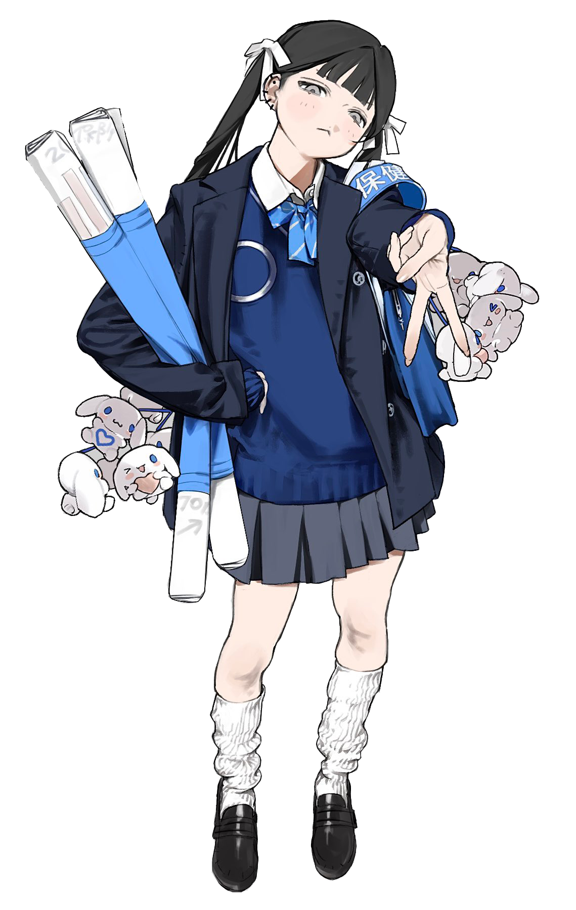

欢迎来到 seolhae.neocities.org！这里是我的个人小角落， 主要用来记录喜欢的动漫、追的团，还有日常的一些碎碎念。
我把这里当成一个练习写代码、做设计的空间，也会不定期分享自己在意的东西。
希望你喜欢逛这个网站！也欢迎在留言板留下你的足迹，我都会认真看的。
这个网站是纯手写 HTML / CSS 搭建的静态页面，托管在 GitHub Pages 上， 没有使用任何网站生成器模板。
⋆ Reigen Arataka